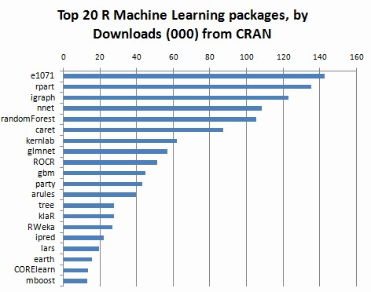

Getting Started¶
Note
Good tools are prerequisite to the successful execution of a job – old Chinese proverb
Let’s keep sharpening our tools. A good programming platform can save you lots of troubles and time. Herein I will only present how to install my favorite programming platform for R and Python and only show the easiest way which I know to install them on Linux system. If you want to install on the other operator system, you can Google it. In this section, you may learn how to install R, Python and the corresponding programming platform and package.
Installing programming language¶
- Installing R
Go to Ubuntu Software Center and follow the following steps:
- Open Ubuntu Software Center
- Search for r-base
- And click Install
Or Open your terminal and using the following command:
sudo apt-get update sudo apt-get install r-base
- Insralling Python
Go to Ubuntu Software Center and follow the following steps:
- Open Ubuntu Software Center
- Search for python
- And click Install
Or Open your terminal and using the following command:
sudo apt-get install build-essential checkinstall sudo apt-get install libreadline-gplv2-dev libncursesw5-dev libssl-dev libsqlite3-dev tk-dev libgdbm-dev libc6-dev libbz2-dev sudo apt-get install python sudo easy_install pip sudo pip install ipython
Installing programming platform¶
My favorite programming platform for R is definitely RStudio IDE and for Python is Eclipse+Pydev.
- Installing RStudio
Go to Ubuntu Software Center and follow the following steps:
- Open Ubuntu Software Center
- Search for RStudio
- And click Install
- Installing Eclipse + Pydev
- Installing Eclipse
Go to Ubuntu Software Center and follow the following steps:
- Open Ubuntu Software Center
- Search for Eclipse
- And click Install
- Installing Pydev
- Open Eclipse
- Go to Eclipse Marketplace
- Search for Pydev
- And click Pydev- Python IDE for Eclipse
Here is the video tutorial for installing Pydev for Eclipse on Youtube: Pydev on Youtube
Installing package¶
- Installing package for R
Install package for R in RStudio os super easy, I will use tree package as a example:
install.packages("tree")
The following are the top 20 R machine learning and data science packages from Bhavya Geethika, you may want to install all of them.
- e1071 Functions for latent class analysis, short time Fourier transform, fuzzy clustering, support vector machines, shortest path computation, bagged clustering, naive Bayes classifier etc (142479 downloads)
- rpart Recursive Partitioning and Regression Trees. (135390)
- igraph A collection of network analysis tools. (122930)
- nnet Feed-forward Neural Networks and Multinomial Log-Linear Models. (108298)
- randomForest Breiman and Cutler’s random forests for classification and regression. (105375)
- caret package (short for Classification And REgression Training) is a set of functions that attempt to streamline the process for creating predictive models. (87151)
- kernlab Kernel-based Machine Learning Lab. (62064)
- glmnet Lasso and elastic-net regularized generalized linear models. (56948)
- ROCR Visualizing the performance of scoring classifiers. (51323)
- gbm Generalized Boosted Regression Models. (44760)
- party A Laboratory for Recursive Partitioning. (43290)
- arules Mining Association Rules and Frequent Itemsets. (39654)
- tree Classification and regression trees. (27882)
- klaR Classification and visualization. (27828)
- RWeka R/Weka interface. (26973)
- ipred Improved Predictors. (22358)
- lars Least Angle Regression, Lasso and Forward Stagewise. (19691)
- earth Multivariate Adaptive Regression Spline Models. (15901)
- CORElearn Classification, regression, feature evaluation and ordinal evaluation. (13856)
- mboost Model-Based Boosting. (13078)
Fig. 1 Top 20 R Machine Learning and Data Science packages. From http://www.kdnuggets.com/2015/06/top-20-r-machine-learning-packages.html
- Installing package for Python
Install package or modules for Python in Linux can also be quite easy. Here I will only present installation by using pip.
- Installing pip
sudo easy_install pip
- Installing numpy
pip install numpy
- Installing pandas
pip install pandas
- Installing scikits-learn
pip install -U scikit-learn
The following are the best Python modules for data mining from kdnuggets, you may also want to install all of them.
- Basics
- numpy - numerical library, http://numpy.scipy.org/
- scipy - Advanced math, signal processing, optimization, statistics, http://www.scipy.org/
- matplotlib, python plotting - Matplotlib, http://matplotlib.org
- Machine Learning and Data Mining
- MDP, a collection of supervised and unsupervised learning algorithms, http://pypi.python.org/pypi/MDP/2.4
- mlpy, Machine Learning Python, http://mlpy.sourceforge.net
- NetworkX, for graph analysis, http://networkx.lanl.gov/
- Orange, Data Mining Fruitful & Fun, http://biolab.si
- pandas, Python Data Analysis Library, http://pandas.pydata.org
- pybrain, http://pybrain.org
- scikits-learn - Classic machine learning algorithms - Provide simple an efficient solutions to learning problems, http://scikit-learn.org/stable/
- Natural Language
- NLTK, Natural Language Toolkit, http://nltk.org
- For web scraping
- Scrapy, An open source web scraping framework for Python, http://scrapy.org
- urllib/urllib2
Herein I would like to add one more important package Theano for deep learning and textmining for text mining:
- Theano, deep learning, http://deeplearning.net/tutorial/
- textmining, text mining, https://pypi.python.org/pypi/textmining/1.0